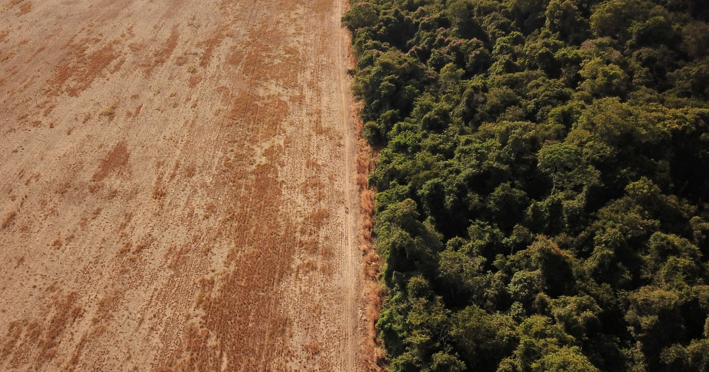
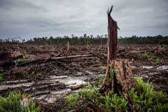
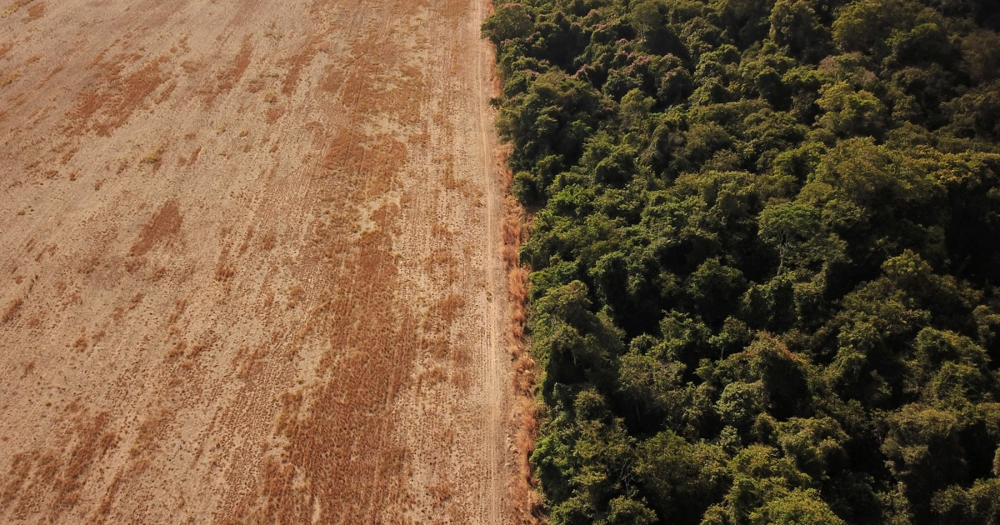
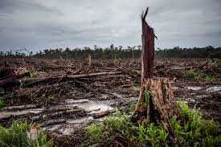

Deforestation Test
by Rodolfo Rodriguez
Why is deforestation taking place? Agriculture is responsible for almost 80% of deforestation, according to the FAO. Agriculture such as commercial and industrial culture is responsible for 40% of forest loss because of the search for space to grow biofuels such as palm oil. Urbanization and the growth of cities have also pushed the natural boundaries that surround them.
 



The construction of human infrastructures has also been a factor in driving deforestation. More importantly, 10% of deforestation can be attributed to new infrastructures that serve transportation, transformation, and energy generation. The need for large extraction, transportation, and transformation infrastructures for different types of products such as meat, coal, and oil have also affected deforestation.
One of the biggest effects of deforestation is the threat it has to biodiversity. Because of this ecosystems are now getting put in danger.
Soil erosion also occurs because of deforestation. The soil is rich because the sun-blocking tree cover helps the soil to slowly dry out. Without the trees, the soil will become fragile and leave the area vulnerable to disasters.

Deforestation also contributes to climate change since trees are responsible for absorbing CO2 and releasing oxygen into the air.

Meat consumption by 90% is the single biggest way to reduce global warming according to the late 2018 IPCC report. Global farmland use could also be reduced by over 75% leading to less deforestation and global warming.
Palm oils are used everywhere and limiting the consumption of products that use palm oils and even fossil fuels can lead to reducing the rate of deforestation.
Raising awareness about deforestation is a vital factor in stopping deforestation. By having more people aware of deforestation and its effects there can be fast-paced progress towards ending this issue.
© Rodolfo Rodriguez